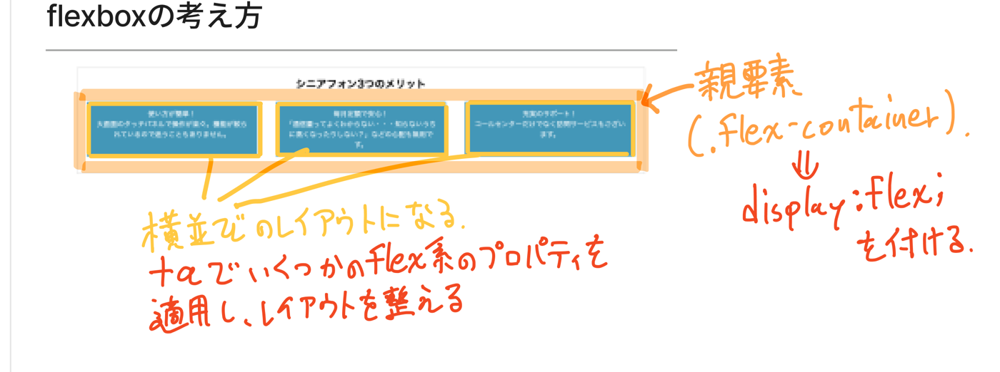
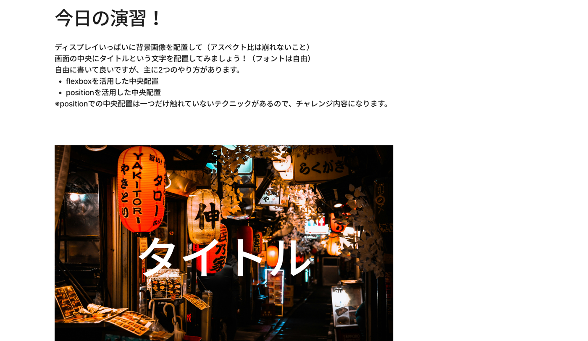

訓練校｜全6時間の集中授業
今日の主役は フレックスボックス（flexbox）。
簡単に言うと 「箱（親）に『中身をきれいに横へ並べて』と命令する魔法」です。これまでは横並びにするのに苦労していましたが、たった1行 display: flex; を書くだけで、中のカードが自動でキレイに横一列になります。
ほかに「背景画像の置き方（background）」と「ふせんみたいに要素をずらす position」も習いました。
「親要素 .flex-container に display: flex を付ける → 横並びのレイアウトになる。＋αで flex系のプロパティを使って、レイアウトを整える」
（A先生がボードに手書きで残したメッセージ。今日の核心はこの1行です）
授業の流れを時間順に。行をクリックすると、その説明へジャンプします。★が多いほど大事。
| 時刻 | 内容 | 大事さ |
|---|---|---|
| 00:00 | 前回（5/15）のカードレイアウトの見本を確認 | ★★ |
| 00:05 | 応用編スタート・フレックスボックス予告 | ★★★ |
| 00:06 | dl / dt / dd タグ（用語と説明をセットで書くタグ） | ★★ |
| 00:08 | VSCodeの便利プラグインを導入 | ★★★ |
| 00:31 | Prettier設定（保存で自動キレイ化） | ★★ |
| 00:38 | 休憩 | — |
| 00:54 | フレックスボックスとは（高さも自動で揃う） | ★★★ |
| 01:14 | Live Server の使い方 | ★★★ |
| 01:25 | display:flex を親に → 子が横並び | ★★★ |
| 01:28 | justify-content（横のすき間の配り方） | ★★★ |
| 01:30 | flex-basis（フレックス中の幅） | ★★★ |
| 01:33 | 休憩 | — |
| 01:43 | フレックスボックスの考え方を総おさらい | ★★★ |
| 01:55 | flex-direction（横並び/縦並びの切替） | ★★★ |
| 01:58 | スマホでは縦に並べる（メディアクエリ） | ★★★ |
| 02:02 | 演習：前回のカードをフレックスで作り直し | ★★★ |
| 02:27 | お昼休憩 | — |
| 03:19 | 演習の見本・すき間の取り方3パターン | ★★★ |
| 03:43 | 背景画像の置き方（background） | ★★★ |
| 03:53 | VSCodeワークスペース（複数フォルダを一括表示） | ★★ |
| 04:00 | 休憩 | — |
| 04:16 | background-size（cover / contain） | ★★★ |
| 04:33 | position（4種類のふせん機能） | ★★★ |
| 04:52 | 親relative＋子absolute の関係 | ★★★ |
| 05:00 | 休憩 | — |
| 05:09 | バッジ（NEW・SALE）の貼り方の実演 | ★★★ |
| 05:19 | positionでレイアウトを組むのは絶対ダメ | ★★★ |
| 05:21 | aタグの中にaタグはダメ（兄弟にする） | ★★★ |
| 05:27 | 今日の演習（画面いっぱい画像＋中央に文字） | ★★ |
| 05:33 | 授業終了 | — |
親の箱に書くと、中の子が自動で横一列。
文章の長さがバラバラでも高さがそろう。手作業ナシ。
横のすき間の配り方ダイヤル。
フレックス中の幅。だいたい 30% とか。
横/縦の切替スイッチ。スマホは縦に。
右クリックですぐプレビューできる。
cover＝覆う/contain＝収める。背景版のobject-fit。
ふせん機能。4種類ある。
バッジ（NEW等）を貼る鉄板パターン。
レイアウトをpositionで組むのは絶対ダメ。
「箱（親）に『中身をきれいに横に並べて』と命令する魔法」です。
本棚に本を立てると自動でそろうみたいに、カードを箱に入れて命令1つで横一列になります。
/* 横に並べたいカードたちの「親」に書くだけ */ .flex-container { display: flex; }
これだけで、.flex-container の直接の子どもが横一列に並びます。
（※「直接の子」だけ。孫（子の中の子）には効きません）
ボードには「シニアフォン 3つのメリット」という3枚の青いカードが横並びの図があり、こう手書きされていました：
・右上：「親要素 .flex-container」→「↓ display: flex を付ける」
・下：「横並びのレイアウトになる」「＋αで flex系のプロパティを使い、レイアウトを整える」
つまり「親に命令 → 子が横並び → あとは細かい調整」という3ステップです。

display: flex を付けると、子のカードが横並びになる
3枚のカードで文章の長さがバラバラでも、高さが自動で一番長いカードに合わせてそろいます。
前にやった inline-block だと、文章が長いカードだけ背が高くなって表彰台みたいにガタガタになっていました。フレックスはそれを自動で直してくれます。手作業ゼロ。
| 方法 | 横並び | 高さそろう？ | 評価 |
|---|---|---|---|
| inline-block（前回） | ○ | ✕ ガタガタ | △ |
| フレックスボックス（今回） | ○ | ○ 自動 | ◎ |
※ さらにすごい「CSS Grid」もありますが、覚えることが多くてクセが強いので後回し。まずはフレックスボックスを完ぺきに。これでサイトの大半は作れます。
先生の板書（Figma）にあった本物のコードです。これを写して動かすのが一番の練習になります。
<section> <h2>シニアフォン 3つのメリット</h2> <dl class="flex-container"> <!-- ← この親に display:flex --> <div class="flex-item"> <dt>使い方が簡単！</dt> <dd>大画面のタッチパネルで操作が楽々。機能…</dd> </div> <div class="flex-item"> <dt>毎月定額で安心！</dt> <dd>「通信量ってよくわからない…知らな…</dd> </div> <div class="flex-item"> <dt>充実のサポート！</dt> <dd>コールセンターだけでなく訪問サービス…</dd> </div> </dl> </section>
.flex-container { display: flex; /* これで横並び！ */ justify-content: space-around; /* すき間を配る */ } .flex-item { flex-basis: 30%; /* 1枚あたりの幅 */ }
dl（親）に display:flex → 中の div 3つが横並びjustify-content ＝ 3枚のすき間の配り方を決めるflex-basis: 30% ＝ 1枚を画面の3割くらいの幅にフレックス系の命令はたくさんあります。早見表（チートシート）を手元に置くのが現場のやり方。
| 値 | やさしく解説の意味 |
|---|---|
flex-start | ぜんぶ左に寄せる（最初の状態） |
center | 真ん中に集める |
space-between | 両はじにくっつけて、間をめいっぱい空ける |
space-around | 各カードの周りに同じすき間（端は半分） |
space-evenly | すき間を全部きっちり同じに |
width でも動きますが、フレックスの時は flex-basis を使うのが本来のやり方。
（縦並びに切り替えた時の動きが微妙に違うので、慣れたら使い分け）
| 値 | 意味 |
|---|---|
row | 横並び（最初の状態） |
column | 縦並び（スマホでよく使う） |
row-reverse など | 並び順を逆に（あまり使わない） |
パソコンでは横3列、スマホでは縦1列。これがスマホ対応の王道パターン。
/* 画面が768px以下になったら縦並びに */ @media screen and (max-width: 768px) { .flex-container { flex-direction: column; /* 横→縦 */ } }
flex-direction: column はただの「横/縦の切替スイッチ」。スマホ幅になったらスイッチを「縦」に倒すだけ。たった1行でカードが縦積みになります。
screen and (max-width:...) の半角スペースを忘れると動きません。これだけで動かない人が毎回います。
「用語」と「その説明」をセットで書くタグ。前週の ul/ol/li とは別物。
<dl> <dt>リンゴ</dt> <!-- 用語 --> <dd>赤くて甘い果物</dd> <!-- 説明 --> </dl>
dl＝definition list（説明リスト）、dt＝term（用語）、dd＝description（説明）。
「用語」と「説明」がイコールになる関係なら何でも使える（例：募集職種＝ウェブデザイナー）。今日のシニアフォンのコードでも使われていました。
プラグイン＝VSCodeに後付けする便利アプリ。応用編に入ったので、効率化ツールをまとめて入れました。
| プラグイン | 何をしてくれる？ | 必須？ |
|---|---|---|
| Live Server | 右クリックですぐプレビュー。保存すると自動で画面が更新 | ★★★ |
| Prettier | 保存するとコードを自動でキレイに整列 | ★★★ |
| vscode-icons | ファイルのアイコンを見やすく | ★ |
| 全角スペース可視化 | まちがえて入れた全角スペースを赤く警告 | ★★ |
| HTML CSS Support | クラス名を予測変換 | ★ |
| Auto Rename Tag | 開始タグを変えると閉じタグも自動で変わる | ★★ |
| indent-rainbow | 字下げの深さを色分け | ★ |
プラグインは有志がタダで作っているもの。だから時々うまく動きません。動かない時はVSCodeを再起動、最悪はあきらめる、くらいの気持ちで。
作業ファイルと教科書データが別の場所にある人向け。両方を1つのVSCodeで同時に見られます。
.code-workspace をダブルクリックで両方ひらくワークスペースはフォルダの場所を覚えているだけ。フォルダを移動すると見えなくなります。場所は固定で。
教科書104-105p。背景に関する命令をまとめて書けます。
背景画像が表示されない一番の原因は「その箱に高さがない」こと。
箱の中に文字が少ししかないと、箱がペチャンコで背景が見えません。height を指定するか、中身を入れましょう。
| 命令 | 意味 |
|---|---|
background-image: url(...) | 背景にする画像 |
background-position: center bottom | 画像の位置（横 縦） |
background-repeat: no-repeat | くり返さない（最初はタイル状にくり返す） |
background-size: cover | 箱いっぱいに覆う（はみ出しはカット） |
background-size: contain | 形を崩さず全体が収まるように |
object-fit: cover → imgタグの画像に使う
background-size: cover → 背景画像に使う
どちらも「形を崩さず箱いっぱい」だけど、対象が違います。
「ふせんを好きな場所にペタッと貼る」ような機能。要素を本来の位置から自由に動かせます。
でも骨組み（レイアウト）には絶対使いません。あくまで「ちょい動かし」専用です。
| 値 | やさしく解説の意味 |
|---|---|
static | ふつう（最初の状態。何もしない） |
relative | 今いる場所を基準にちょいずらし |
absolute | 親を基準にして好きな場所へジャンプ |
fixed | 画面に貼り付けて固定（スクロールしても動かない＝固定ヘッダー） |
動かす量は top / right / bottom / left で指定。マイナスの値も使えます。
横並びなどの骨組みをpositionで作るのは絶対ダメ（ほぼ100%崩れます）。
理由：positionは「ピッタリこの位置」と固定するので、画面の大きさに合わせて伸び縮みできないから。
→ 骨組みはフレックスボックス。positionは「中身をちょい動かす」専用。
※ 昔これで3時間悩んでゼロから作り直した先輩がいたそうです。それくらい大事。
positionの鉄板コンビ。カードの角に「NEW」「SALE」みたいなバッジを貼る時に使います。
/* 親に「ここが基準だよ」の目印 */ .card { position: relative; } /* 子は親を基準に好きな場所へ */ .card .badge { position: absolute; top: -8px; left: -8px; /* 左上から少しはみ出す */ }
relative＝「このカードを基準（ものさしのゼロ点）にしてね」absolute＝「その基準から、左に8px・上に8px ずらして貼って」absolute の子は1枚浮いた状態になる→親が高さを忘れて縮むので注意<a>（リンク）の中に <a> を入れるのはHTMLのルール違反。どっちがリンクか分からなくなるからです。
カード全体をリンクにしつつ、中のバッジも別リンクにしたい時は兄弟（横並び）にする：
/* ✕ ダメ：aの中にa */ <a>…<a>バッジ</a></a> /* ○ OK：共通の親divで囲んで兄弟に */ <div class="card"> <a href="記事へ">…</a> <a href="一覧へ">バッジ</a> </div>
※ B先生いわく「aの入れ子で3時間以上悩む」事例も実在。aは兄弟にが鉄則。
ボードに「今日の演習！」として夜景写真の上に白い「タイトル」の文字が中央に大きくのった見本がありました。これを自分で作るのが宿題です。

今日習った flexbox を使う。こちらから先に挑戦。
授業で触れていないテクニックが1つあるので、調べてチャレンジ。①ができたら②へ。
※ 画面いっぱいの背景は background-size: cover、中央配置は flexbox なら親に display:flex; justify-content:center; align-items:center; がヒント。フォルダ名・ファイル名はいつも通り練習（practice）でOK。
| 用語 | やさしい意味 |
|---|---|
| display: flex | 親に書くと中の子が横一列に並ぶ魔法の命令 |
| フレックスコンテナ | flexをかけた親の箱 |
| フレックスアイテム | 横に並ぶ子（カード） |
| justify-content | 横方向のすき間の配り方ダイヤル |
| align-items | 縦方向のそろえ方 |
| flex-basis | フレックス中の1枚あたりの幅 |
| flex-direction | 横/縦の切替スイッチ（row=横, column=縦） |
| CSS Grid | flexの上級版（後で習う） |
| dl / dt / dd | 説明リスト / 用語 / 説明 |
| プラグイン | VSCodeに後付けする便利アプリ |
| Live Server | 右クリックですぐプレビューする道具 |
| Prettier | 保存でコードを自動キレイ化 |
| ワークスペース | 複数フォルダを1画面で見る機能 |
| background-size: cover | 背景画像を箱いっぱいに覆う |
| background-size: contain | 形を崩さず全体を収める |
| position: relative | 今の場所を基準にちょいずらし／基準の目印 |
| position: absolute | 親を基準に好きな場所へジャンプ（浮く） |
| position: fixed | 画面に貼り付けて固定 |
| top/right/bottom/left | positionの動かす量 |
| aタグの入れ子 | aの中にaはダメ。兄弟にする |
| アスペクト比 | 画像のたて横の比率（ゆがめないこと） |
screen and (...) の半角スペースを忘れない今後つくるレイアウトはフレックスボックスを使えば大半が全部作れちゃう。それくらい便利。めちゃくちゃ使います。
フレックス系の命令は display:flex がかかってないと意味がない。コンビで初めて動くコンボ技みたいなもの。
ポジションでレイアウトは組まない。どこかに強く書いておいてください。組んじゃうと結局ゼロから作り直しです。
（タグの組み立てがパッと思いつくには？）アウトプットの回数が物を言う。サイト全部じゃなく「この部分だけ」を何回も作るのがおすすめ。
プラグインは有志がタダで作ってるんで毎回完ぺきに動くもんじゃない。お金が発生してないんだよね。そりゃそうだよねって感じ。